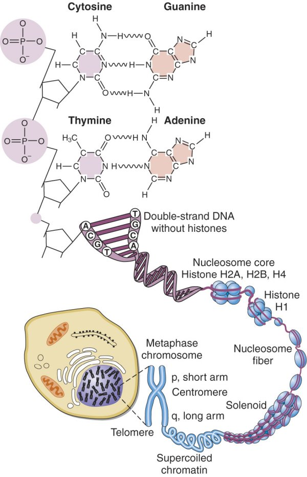
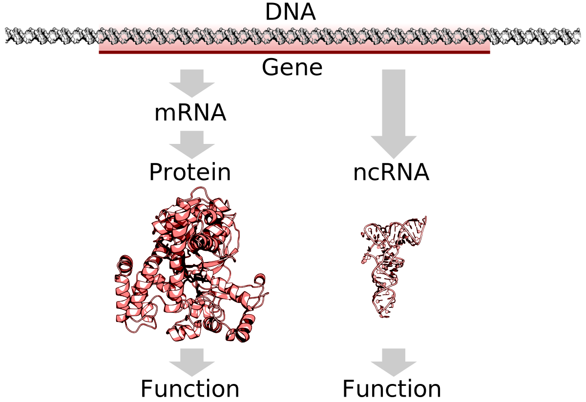
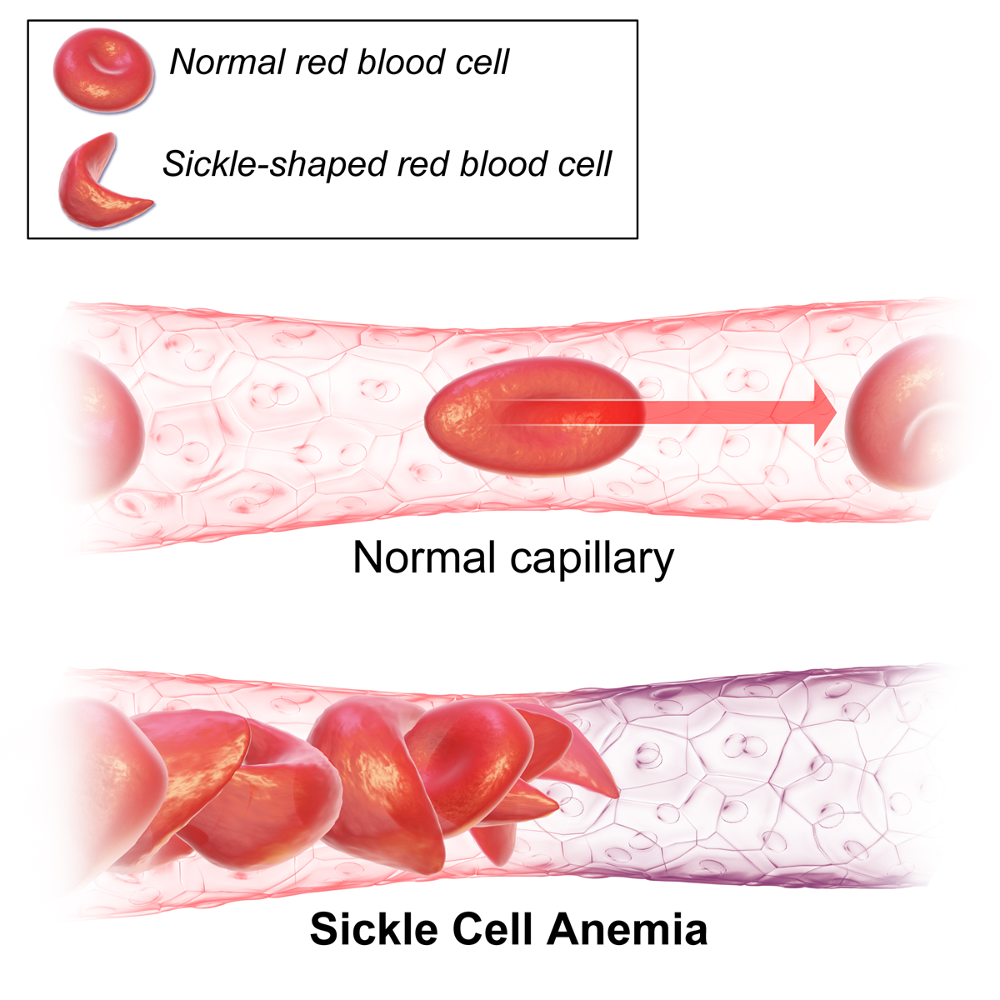
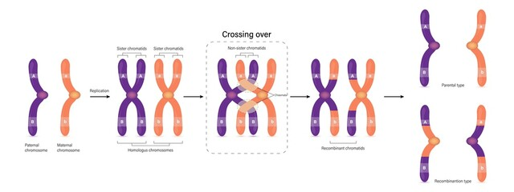
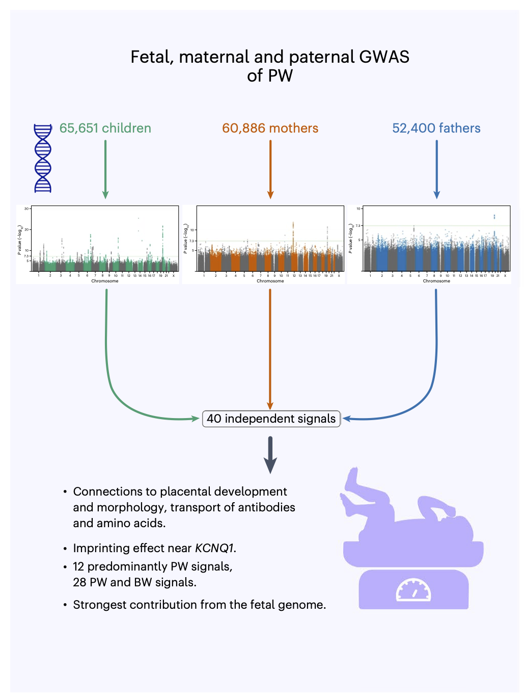

Background
DNA
- 6 Billion base pairs: 3 billion from father and 3 billion from mother
- Organised in \(2 \times 23\) chromosomes of length 50 - 250 milion bp

Transcription / translation

Variation in DNA
90% of variation in DNA are SNP: single nucleotide polymorphism. Different base at a single position in the DNA
Humans: \(\pm\) 5 million SNPs
Most of them are neutral: high redundancy in the genomic code
Sometimes they are not neutral:

- Genomic recombination of parental chromosomes when producing germ cells.

- Linkage disequilibrium: SNPs often occur together because of genomic recombination!
GWAS in University of Bergen
- GWAS: Genome Wide Association Studies
- Studies in large cohorts
- Use SNPs to identify genes associated with a particular trait: e.g. birth weight, pacenta weight, BMI, … .

Linear models for GWAS
In GWAS one often corrects for population stratification using the following linear model.
\[
\tag{1}
\mathbf{y} = \mathbf{x}_\text{test}\beta_\text{test} + \mathbf{X}_c\boldsymbol{\beta}_c + \mathbf{X}_\text{PCA} \boldsymbol{\beta}_\text{PCA} +\boldsymbol{\epsilon}
\]
with
- \(\mathbf{y}\) an \(N\times1\) vector of the phenotype
- \(\mathbf{x}_\text{test}\) an \(N\times1\) vector with the genotype for the candidate SNP
- \(\beta_\text{test}\) the association of candidate SNP and the phenotype
- \(\mathbf{X}_c\) an \(N\times C\) matrix with the covariate pattern for \(C\) known covariates (vector of ones (intercept), age, gender, batch,…)
- \(\boldsymbol{\beta}_c\) the \(p\times 1\) vector of parameters modeling the association of the p covariates and the phenotype.
- \(\mathbf{X}_\text{PCA}\) an \(N\times p\) matrix with p PCs used to correct for population stratification
- \(\boldsymbol{\epsilon}\) an \(N\times 1\) vector with environmental residuals that are assumed to be i.i.d. \(\epsilon_i \sim N(0,\sigma_u^2)\) with \(i = 1\ldots N\)
Let \(\mathbf{Z}\) be an \(N\times M\) genetic relationship matrix with all \(M\) normalised genotypes.
Then with the SVD we can decompose \(\mathbf{Z}\)
\[
\mathbf{Z} = \mathbf{U}\boldsymbol{\Delta}\mathbf{V}^T
\]
Note, that the \(N\times M\) matrix \(\mathbf{V}\) are also the M PCs of an PCA.
So we can approximate \(\mathbf{Z}\) using a truncated PCA, e.g. by using the first \(p\) PCs.
\[
\mathbf{Z}_p = \mathbf{U}_{p} \boldsymbol{\Delta}_p\mathbf{V}^T_p
\]
with
\[
\mathbf{X}_\text{PCA} = \mathbf{U}_{p} \boldsymbol{\Delta}_p
\]
the scores on the first p PCs that can be used to correct for population stratification.
Linear mixed model for GWAS
Specification
\[
\tag{1}
\mathbf{Y} = \mathbf{x}_\text{test}\beta_\text{test} + \mathbf{X}_c\boldsymbol{\beta}_c + \mathbf{Z}_{GRM}\mathbf{u} +\boldsymbol{\epsilon}
\]
with
- \(\mathbf{Y}\) an \(N\times1\) vector of the phenotype
- \(\mathbf{x}_\text{test}\) an \(N\times1\) vector with the genotype for the candidate SNP
- \(\beta_\text{test}\) the association of candidate SNP and the phenotype
- \(\mathbf{X}_c\) an \(N\times p\) matrix with the covariate pattern for \(C\) known covariates (vector of ones (intercept), age, gender, batch,…)
- \(\boldsymbol{\beta}_c\) the \(p\times 1\) vector of parameters modeling the association of the p covariates and the phenotype.
- \(\mathbf{Z}\) an \(N\times M\) genetic relationship matrix (GRM) with all normalised genotypes
- \(\mathbf{u}\) an \(M\times 1\) vector with i.i.d. random effect for each SNP \(\mathbf{u}\sim \text{MVN}(0,\mathbf{I}\sigma_u^2)\)
- \(\boldsymbol{\epsilon}\) an \(N\times 1\) vector with environmental residuals that are assumed to be independent of \(\mathbf{u}\) and i.i.d. \(\boldsymbol{\epsilon}\sim \text{MVN}(0,\mathbf{I}\sigma_\epsilon^2)\)
Random effects are used to model the correlation structure in the data. They imply a certain covariance structure of \(\mathbf{y}\)
Covariance structure
Covariance structure of \(\mathbf{y}\) implied by GWAS mixed model:
\[
\begin{array}{ccl}
\text{var}\left[\mathbf{Y}\right] &=& \text{var}\left[\mathbf{x}_\text{test}\beta_\text{test} + \mathbf{X}_c\boldsymbol{\beta}_c + \mathbf{Z}_\text{GRM}\mathbf{u} +\boldsymbol{\epsilon}\right]\\\\
&\updownarrow& \mathbf{u} \perp \boldsymbol{\epsilon}\\\\
&=& \text{var}[\mathbf{Z}_\text{GRM}\mathbf{u}] + \text{var}[\boldsymbol{\epsilon}]\\\\
&=&\mathbf{Z}_\text{GRM}\text{var}[\mathbf{u}]\mathbf{Z}_\text{GRM}^T + \mathbf{I} \sigma^2\\\\
&=&\mathbf{Z}_\text{GRM}\mathbf{I}\sigma^2_u\mathbf{Z}_\text{GRM}^T + \mathbf{I} \sigma^2_\epsilon \\\\
&=&\mathbf{Z}_\text{GRM}\mathbf{Z}_\text{GRM}^T \sigma^2_u+ \mathbf{I} \sigma^2_\epsilon
\end{array}
\]
Note that the model is often also written in another way:
\[
\tag{1}
\mathbf{Y} = \mathbf{x}_\text{test}\beta_\text{test} + \mathbf{X}_c\boldsymbol{\beta}_c + \mathbf{g} +\boldsymbol{\epsilon}
\]
with \(\mathbf{g} \sim \text{MVN}(\mathbf{0},\mathbf{K}\sigma^2_g)\)
\(\mathbf{K}\) the \(N \times N\) empirical kinship matrix
\[
\mathbf{K} = \frac{\mathbf{Z}_\text{GRM}\mathbf{Z}^T_\text{GRM}}{M}
\]
- \(\sigma_g^2\) the polygenic variance \(\sigma_g^2=M\sigma_u^2\)
Main advantages of LMM method
- Better control of false positive associations by correcting for population or relatedness structure
- An increase in power:
- Through the correction for this structure.
- by conditioning on associated loci other than the candidate locus.
Pitfalls of LMM
- Computational complexity:
- \(M > 500.000\), \(N > 70000\)
- Building the GRM (\(M \times M\) matrix)
- Estimating the mean and variance components for each of the \(M\) candidate SNP!
- Association statistics for each variant (for each SNP!)
Loss in power when the candidate marker is included in the GRM
Using a small subset of markers in the GRM can compromise correction for stratification
LS0tCnRpdGxlOiAiR1dBUyBiYWNrZ3JvdW5kIgphdXRob3I6ICJMaWV2ZW4gQ2xlbWVudCIKZGF0ZTogInN0YXRPbWljcywgR2hlbnQgVW5pdmVyc2l0eSAoaHR0cHM6Ly9zdGF0b21pY3MuZ2l0aHViLmlvKSIKb3V0cHV0OgogICAgYm9va2Rvd246Omh0bWxfZG9jdW1lbnQyOgogICAgICBjb2RlX2Rvd25sb2FkOiB0cnVlCiAgICAgIGRmX3ByaW50OiBwYWdlZAogICAgICB0aGVtZTogZmxhdGx5CiAgICAgIGhpZ2hsaWdodDogdGFuZ28KICAgICAgdG9jOiB0cnVlCiAgICAgIHRvY19mbG9hdDogdHJ1ZQogICAgICBudW1iZXJfc2VjdGlvbnM6IHRydWUKICAgICAgY29kZV9mb2xkaW5nOiBzaG93Ci0tLQoKIyBCYWNrZ3JvdW5kCgojIyBETkEKCi0gNiBCaWxsaW9uIGJhc2UgcGFpcnM6IDMgYmlsbGlvbiBmcm9tIGZhdGhlciBhbmQgMyBiaWxsaW9uIGZyb20gbW90aGVyCi0gT3JnYW5pc2VkIGluICQyIFx0aW1lcyAyMyQgY2hyb21vc29tZXMgb2YgbGVuZ3RoIDUwIC0gMjUwIG1pbGlvbiBicAoKIVtdKGNlbGxDaHJvbW9zb21lRG5hQmFzZS5qcGcpCjwvYnI+CgojIyBUcmFuc2NyaXB0aW9uIC8gdHJhbnNsYXRpb24gCgohW10oZ2VuZS5zdmcpCgoKIyMgVmFyaWF0aW9uIGluIEROQQoKLSA5MCUgb2YgdmFyaWF0aW9uIGluIEROQSBhcmUgU05QOiBzaW5nbGUgbnVjbGVvdGlkZSBwb2x5bW9ycGhpc20uIERpZmZlcmVudCBiYXNlIGF0IGEgc2luZ2xlIHBvc2l0aW9uIGluIHRoZSBETkEKCi0gSHVtYW5zOiAkXHBtJCA1IG1pbGxpb24gU05QcwoKLSBNb3N0IG9mIHRoZW0gYXJlIG5ldXRyYWw6IGhpZ2ggcmVkdW5kYW5jeSBpbiB0aGUgZ2Vub21pYyBjb2RlCgotIFNvbWV0aW1lcyB0aGV5IGFyZSBub3QgbmV1dHJhbDoKCiFbXShTaWNrbGVfQ2VsbF9BbmVtaWFfd2lraTMucG5nKXt3aWR0aD0yNSV9IVtdKHNpY2tsZUNlbGxXaWtpcGVkaWEyLnBuZyl7d2lkdGg9NzUlfQoKCgoKLSBHZW5vbWljIHJlY29tYmluYXRpb24gb2YgcGFyZW50YWwgY2hyb21vc29tZXMgd2hlbiBwcm9kdWNpbmcgZ2VybSBjZWxscy4gCgohW10ocmVjb21iaW5hdGlvbi5qcGVnKQoKLSBMaW5rYWdlIGRpc2VxdWlsaWJyaXVtOiBTTlBzIG9mdGVuIG9jY3VyIHRvZ2V0aGVyIGJlY2F1c2Ugb2YgZ2Vub21pYyByZWNvbWJpbmF0aW9uIQoKIyMgR1dBUyBpbiBVbml2ZXJzaXR5IG9mIEJlcmdlbiAKCi0gR1dBUzogR2Vub21lIFdpZGUgQXNzb2NpYXRpb24gU3R1ZGllcwotIFN0dWRpZXMgaW4gbGFyZ2UgY29ob3J0cwotIFVzZSBTTlBzIHRvIGlkZW50aWZ5IGdlbmVzIGFzc29jaWF0ZWQgd2l0aCBhIHBhcnRpY3VsYXIgdHJhaXQ6IGUuZy4gYmlydGggd2VpZ2h0LCBwYWNlbnRhIHdlaWdodCwgQk1JLCAuLi4gLgoKIVtdKGd3YXNDb250ZXh0VmF1ZGVsMi5wbmcpCgoKIyBMaW5lYXIgbW9kZWxzIGZvciBHV0FTCgpJbiBHV0FTIG9uZSBvZnRlbiBjb3JyZWN0cyBmb3IgcG9wdWxhdGlvbiBzdHJhdGlmaWNhdGlvbiB1c2luZyB0aGUgZm9sbG93aW5nIGxpbmVhciBtb2RlbC4gCgokJApcdGFnezF9ClxtYXRoYmZ7eX0gPSBcbWF0aGJme3h9X1x0ZXh0e3Rlc3R9XGJldGFfXHRleHR7dGVzdH0gKyBcbWF0aGJme1h9X2NcYm9sZHN5bWJvbHtcYmV0YX1fYyArIFxtYXRoYmZ7WH1fXHRleHR7UENBfSBcYm9sZHN5bWJvbHtcYmV0YX1fXHRleHR7UENBfSArXGJvbGRzeW1ib2x7XGVwc2lsb259IAokJAp3aXRoIAoKLSAkXG1hdGhiZnt5fSQgYW4gJE5cdGltZXMxJCB2ZWN0b3Igb2YgdGhlIHBoZW5vdHlwZQotICRcbWF0aGJme3h9X1x0ZXh0e3Rlc3R9JCBhbiAkTlx0aW1lczEkIHZlY3RvciB3aXRoIHRoZSBnZW5vdHlwZSBmb3IgdGhlIGNhbmRpZGF0ZSBTTlAKLSAkXGJldGFfXHRleHR7dGVzdH0kIHRoZSBhc3NvY2lhdGlvbiBvZiBjYW5kaWRhdGUgU05QIGFuZCB0aGUgcGhlbm90eXBlCi0gJFxtYXRoYmZ7WH1fYyQgYW4gJE5cdGltZXMgQyQgbWF0cml4IHdpdGggdGhlIGNvdmFyaWF0ZSBwYXR0ZXJuIGZvciAkQyQga25vd24gY292YXJpYXRlcyAodmVjdG9yIG9mIG9uZXMgKGludGVyY2VwdCksIGFnZSwgZ2VuZGVyLCBiYXRjaCwuLi4pIAotICRcYm9sZHN5bWJvbHtcYmV0YX1fYyQgdGhlICRwXHRpbWVzIDEkIHZlY3RvciBvZiBwYXJhbWV0ZXJzIG1vZGVsaW5nIHRoZSBhc3NvY2lhdGlvbiBvZiB0aGUgcCBjb3ZhcmlhdGVzIGFuZCB0aGUgcGhlbm90eXBlLiAKLSAkXG1hdGhiZntYfV9cdGV4dHtQQ0F9JCBhbiAkTlx0aW1lcyBwJCBtYXRyaXggd2l0aCBwIFBDcyB1c2VkIHRvIGNvcnJlY3QgZm9yIHBvcHVsYXRpb24gc3RyYXRpZmljYXRpb24KLSAkXGJvbGRzeW1ib2x7XGVwc2lsb259JCBhbiAkTlx0aW1lcyAxJCB2ZWN0b3Igd2l0aCBlbnZpcm9ubWVudGFsIHJlc2lkdWFscyB0aGF0IGFyZSBhc3N1bWVkIHRvIGJlIGkuaS5kLiAgJFxlcHNpbG9uX2kgXHNpbSBOKDAsXHNpZ21hX3VeMikkIHdpdGggJGkgPSAxXGxkb3RzIE4kCgoKTGV0ICRcbWF0aGJme1p9JCBiZSBhbiAkTlx0aW1lcyBNJCBnZW5ldGljIHJlbGF0aW9uc2hpcCBtYXRyaXggd2l0aCBhbGwgJE0kIG5vcm1hbGlzZWQgZ2Vub3R5cGVzLiAKVGhlbiB3aXRoIHRoZSBTVkQgd2UgY2FuIGRlY29tcG9zZSAkXG1hdGhiZntafSQKCiQkClxtYXRoYmZ7Wn0gPSBcbWF0aGJme1V9XGJvbGRzeW1ib2x7XERlbHRhfVxtYXRoYmZ7Vn1eVAokJApOb3RlLCB0aGF0IHRoZSAkTlx0aW1lcyBNJCBtYXRyaXggJFxtYXRoYmZ7Vn0kIGFyZSBhbHNvIHRoZSBNIFBDcyBvZiBhbiBQQ0EuIApTbyB3ZSBjYW4gYXBwcm94aW1hdGUgJFxtYXRoYmZ7Wn0kIHVzaW5nIGEgdHJ1bmNhdGVkIFBDQSwgZS5nLiBieSB1c2luZyB0aGUgZmlyc3QgJHAkIFBDcy4gCiQkClxtYXRoYmZ7Wn1fcCA9IFxtYXRoYmZ7VX1fe3B9IFxib2xkc3ltYm9se1xEZWx0YX1fcFxtYXRoYmZ7Vn1eVF9wCiQkCndpdGggCgokJApcbWF0aGJme1h9X1x0ZXh0e1BDQX0gPSBcbWF0aGJme1V9X3twfSBcYm9sZHN5bWJvbHtcRGVsdGF9X3AKJCQKdGhlIHNjb3JlcyBvbiB0aGUgZmlyc3QgcCBQQ3MgdGhhdCBjYW4gYmUgdXNlZCB0byBjb3JyZWN0IGZvciBwb3B1bGF0aW9uIHN0cmF0aWZpY2F0aW9uLiAKCiMgTGluZWFyIG1peGVkIG1vZGVsIGZvciBHV0FTCgojIyBTcGVjaWZpY2F0aW9uCgokJApcdGFnezF9ClxtYXRoYmZ7WX0gPSBcbWF0aGJme3h9X1x0ZXh0e3Rlc3R9XGJldGFfXHRleHR7dGVzdH0gKyBcbWF0aGJme1h9X2NcYm9sZHN5bWJvbHtcYmV0YX1fYyArIFxtYXRoYmZ7Wn1fe0dSTX1cbWF0aGJme3V9ICtcYm9sZHN5bWJvbHtcZXBzaWxvbn0gCiQkCndpdGggCgotICRcbWF0aGJme1l9JCBhbiAkTlx0aW1lczEkIHZlY3RvciBvZiB0aGUgcGhlbm90eXBlCi0gJFxtYXRoYmZ7eH1fXHRleHR7dGVzdH0kIGFuICROXHRpbWVzMSQgdmVjdG9yIHdpdGggdGhlIGdlbm90eXBlIGZvciB0aGUgY2FuZGlkYXRlIFNOUAotICRcYmV0YV9cdGV4dHt0ZXN0fSQgdGhlIGFzc29jaWF0aW9uIG9mIGNhbmRpZGF0ZSBTTlAgYW5kIHRoZSBwaGVub3R5cGUKLSAkXG1hdGhiZntYfV9jJCBhbiAkTlx0aW1lcyBwJCBtYXRyaXggd2l0aCB0aGUgY292YXJpYXRlIHBhdHRlcm4gZm9yICRDJCBrbm93biBjb3ZhcmlhdGVzICh2ZWN0b3Igb2Ygb25lcyAoaW50ZXJjZXB0KSwgYWdlLCBnZW5kZXIsIGJhdGNoLC4uLikgCi0gJFxib2xkc3ltYm9se1xiZXRhfV9jJCB0aGUgJHBcdGltZXMgMSQgdmVjdG9yIG9mIHBhcmFtZXRlcnMgbW9kZWxpbmcgdGhlIGFzc29jaWF0aW9uIG9mIHRoZSBwIGNvdmFyaWF0ZXMgYW5kIHRoZSBwaGVub3R5cGUuIAotICRcbWF0aGJme1p9JCBhbiAkTlx0aW1lcyBNJCBnZW5ldGljIHJlbGF0aW9uc2hpcCBtYXRyaXggKEdSTSkgd2l0aCBhbGwgbm9ybWFsaXNlZCBnZW5vdHlwZXMKLSAkXG1hdGhiZnt1fSQgYW4gJE1cdGltZXMgMSQgdmVjdG9yIHdpdGggaS5pLmQuIHJhbmRvbSBlZmZlY3QgZm9yIGVhY2ggU05QICRcbWF0aGJme3V9XHNpbSBcdGV4dHtNVk59KDAsXG1hdGhiZntJfVxzaWdtYV91XjIpJAotICRcYm9sZHN5bWJvbHtcZXBzaWxvbn0kIGFuICROXHRpbWVzIDEkIHZlY3RvciB3aXRoIGVudmlyb25tZW50YWwgcmVzaWR1YWxzIHRoYXQgYXJlIGFzc3VtZWQgdG8gYmUgaW5kZXBlbmRlbnQgb2YgJFxtYXRoYmZ7dX0kIGFuZCBpLmkuZC4gICRcYm9sZHN5bWJvbHtcZXBzaWxvbn1cc2ltIFx0ZXh0e01WTn0oMCxcbWF0aGJme0l9XHNpZ21hX1xlcHNpbG9uXjIpJAoKUmFuZG9tIGVmZmVjdHMgYXJlIHVzZWQgdG8gbW9kZWwgdGhlIGNvcnJlbGF0aW9uIHN0cnVjdHVyZSBpbiB0aGUgZGF0YS4gVGhleSBpbXBseSBhIGNlcnRhaW4gY292YXJpYW5jZSBzdHJ1Y3R1cmUgb2YgJFxtYXRoYmZ7eX0kCgojIyBDb3ZhcmlhbmNlIHN0cnVjdHVyZQoKQ292YXJpYW5jZSBzdHJ1Y3R1cmUgb2YgJFxtYXRoYmZ7eX0kIGltcGxpZWQgYnkgR1dBUyBtaXhlZCBtb2RlbDogCgokJApcYmVnaW57YXJyYXl9e2NjbH0KXHRleHR7dmFyfVxsZWZ0W1xtYXRoYmZ7WX1ccmlnaHRdICY9JiBcdGV4dHt2YXJ9XGxlZnRbXG1hdGhiZnt4fV9cdGV4dHt0ZXN0fVxiZXRhX1x0ZXh0e3Rlc3R9ICsgXG1hdGhiZntYfV9jXGJvbGRzeW1ib2x7XGJldGF9X2MgKyBcbWF0aGJme1p9X1x0ZXh0e0dSTX1cbWF0aGJme3V9ICtcYm9sZHN5bWJvbHtcZXBzaWxvbn1ccmlnaHRdXFxcXAomXHVwZG93bmFycm93JiBcbWF0aGJme3V9IFxwZXJwIFxib2xkc3ltYm9se1xlcHNpbG9ufVxcXFwKJj0mIFx0ZXh0e3Zhcn1bXG1hdGhiZntafV9cdGV4dHtHUk19XG1hdGhiZnt1fV0gKyBcdGV4dHt2YXJ9W1xib2xkc3ltYm9se1xlcHNpbG9ufV1cXFxcCiY9JlxtYXRoYmZ7Wn1fXHRleHR7R1JNfVx0ZXh0e3Zhcn1bXG1hdGhiZnt1fV1cbWF0aGJme1p9X1x0ZXh0e0dSTX1eVCArIFxtYXRoYmZ7SX0gXHNpZ21hXjJcXFxcCiY9JlxtYXRoYmZ7Wn1fXHRleHR7R1JNfVxtYXRoYmZ7SX1cc2lnbWFeMl91XG1hdGhiZntafV9cdGV4dHtHUk19XlQgKyBcbWF0aGJme0l9IFxzaWdtYV4yX1xlcHNpbG9uIFxcXFwKJj0mXG1hdGhiZntafV9cdGV4dHtHUk19XG1hdGhiZntafV9cdGV4dHtHUk19XlQgXHNpZ21hXjJfdSsgXG1hdGhiZntJfSBcc2lnbWFeMl9cZXBzaWxvbgpcZW5ke2FycmF5fQokJAoKTm90ZSB0aGF0IHRoZSBtb2RlbCBpcyBvZnRlbiBhbHNvIHdyaXR0ZW4gaW4gYW5vdGhlciB3YXk6CgokJApcdGFnezF9ClxtYXRoYmZ7WX0gPSBcbWF0aGJme3h9X1x0ZXh0e3Rlc3R9XGJldGFfXHRleHR7dGVzdH0gKyBcbWF0aGJme1h9X2NcYm9sZHN5bWJvbHtcYmV0YX1fYyArIFxtYXRoYmZ7Z30gK1xib2xkc3ltYm9se1xlcHNpbG9ufSAKJCQKCi0gd2l0aCAkXG1hdGhiZntnfSBcc2ltIFx0ZXh0e01WTn0oXG1hdGhiZnswfSxcbWF0aGJme0t9XHNpZ21hXjJfZykkIAoKCi0gJFxtYXRoYmZ7S30kIHRoZSAkTiBcdGltZXMgTiQgZW1waXJpY2FsIGtpbnNoaXAgbWF0cml4IAoKJCQKXG1hdGhiZntLfSA9IFxmcmFje1xtYXRoYmZ7Wn1fXHRleHR7R1JNfVxtYXRoYmZ7Wn1eVF9cdGV4dHtHUk19fXtNfSAKJCQgCgotICRcc2lnbWFfZ14yJCB0aGUgcG9seWdlbmljIHZhcmlhbmNlICRcc2lnbWFfZ14yPU1cc2lnbWFfdV4yJAoKIyMgTWFpbiBhZHZhbnRhZ2VzIG9mIExNTSBtZXRob2QKCjEuIEJldHRlciBjb250cm9sIG9mIGZhbHNlIHBvc2l0aXZlIGFzc29jaWF0aW9ucyBieSBjb3JyZWN0aW5nIGZvciBwb3B1bGF0aW9uIG9yIHJlbGF0ZWRuZXNzIHN0cnVjdHVyZSAKMi4gQW4gaW5jcmVhc2UgaW4gcG93ZXI6IAotIFRocm91Z2ggdGhlIGNvcnJlY3Rpb24gZm9yIHRoaXMgc3RydWN0dXJlLiAKLSBieSBjb25kaXRpb25pbmcgb24gYXNzb2NpYXRlZCBsb2NpIG90aGVyIHRoYW4gdGhlIGNhbmRpZGF0ZSBsb2N1cy4gCgojIyBQaXRmYWxscyBvZiBMTU0KCjEuIENvbXB1dGF0aW9uYWwgY29tcGxleGl0eTogCgogIC0gJE0gPiA1MDAuMDAwJCwgJE4gPiA3MDAwMCQKICAtIEJ1aWxkaW5nIHRoZSBHUk0gKCRNIFx0aW1lcyBNJCBtYXRyaXgpCiAgLSBFc3RpbWF0aW5nIHRoZSBtZWFuIGFuZCB2YXJpYW5jZSBjb21wb25lbnRzICBmb3IgZWFjaCBvZiB0aGUgJE0kIGNhbmRpZGF0ZSBTTlAhIAogIC0gQXNzb2NpYXRpb24gc3RhdGlzdGljcyBmb3IgZWFjaCB2YXJpYW50IChmb3IgZWFjaCBTTlAhKQoKMi4gTG9zcyBpbiBwb3dlciB3aGVuIHRoZSBjYW5kaWRhdGUgbWFya2VyIGlzIGluY2x1ZGVkIGluIHRoZSBHUk0KCjMuIFVzaW5nIGEgc21hbGwgc3Vic2V0IG9mIG1hcmtlcnMgaW4gdGhlIEdSTSBjYW4gY29tcHJvbWlzZSBjb3JyZWN0aW9uIGZvciBzdHJhdGlmaWNhdGlvbgoKCg==